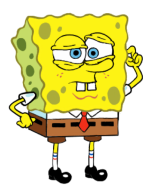

CURIOSIDADES
Você talvez não tem caracteristicas de um mesmo personagens, mas temos
algumas curiosidades. A teoria sugere que Bob Esponja pode sofrer de
TDAH (Transtorno de Déficit de Atenção e Hiperatividade), já que ele
quase nunca fica parado e sua capacidade de atenção é bastante curta,
exceto quando se trata de tarefas nas quais ele está realmente
interessado, como cozinhar e caçar medusas.
Já Patrick pode sofrer de TPB (transtorno de personalidade borderline),
dada sua incapacidade de realizar tarefas simples. Sandy por sua vez
pode ter Bipolaridade, devido suas oscilações extremas de humor e
impulsividade.
Lula Molusco, pode ter Transtorno de Ansiedade Social, depressão ou
mesmo narcisismo, dada sua tendência a se isolar, seu distanciamento da
maioria das coisas e pessoas e seu grande ego. O Sr. Siriguejo
representa o Transtorno Obsessivo-Compulsivo e talvez o Transtorno da
Personalidade Narcisista (NPD) também, dado o quão obcecado ele é por
dinheiro e como ele sempre o colocará acima de tudo.